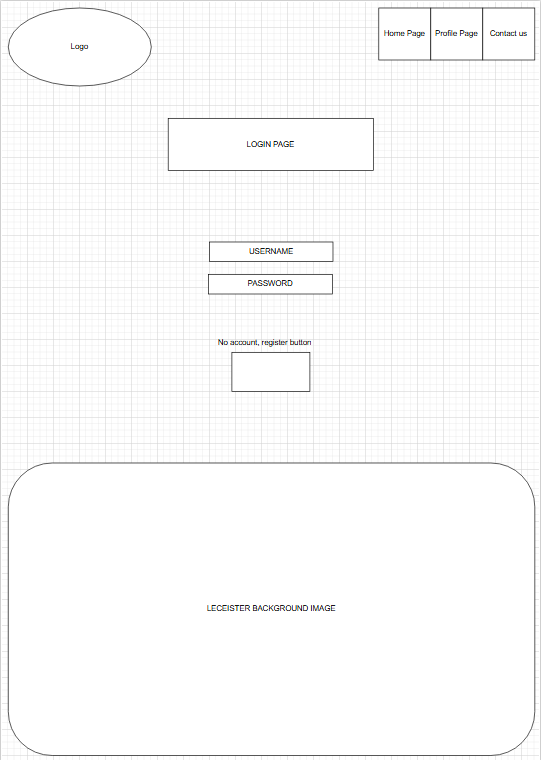
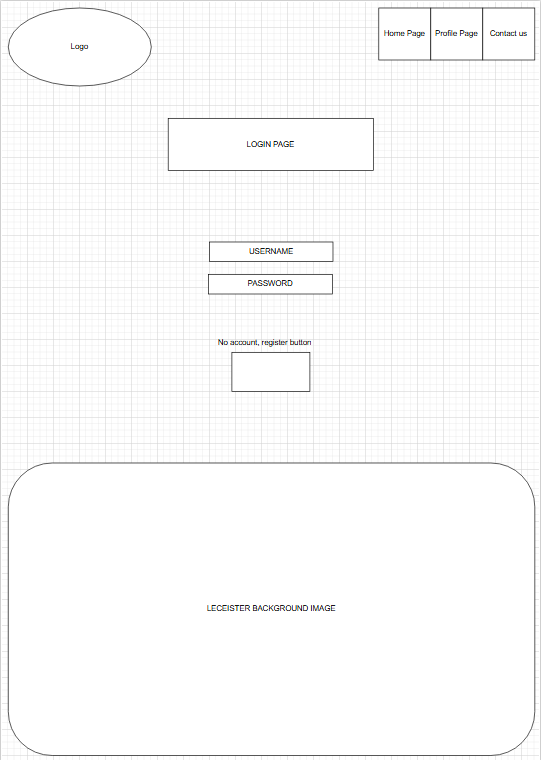
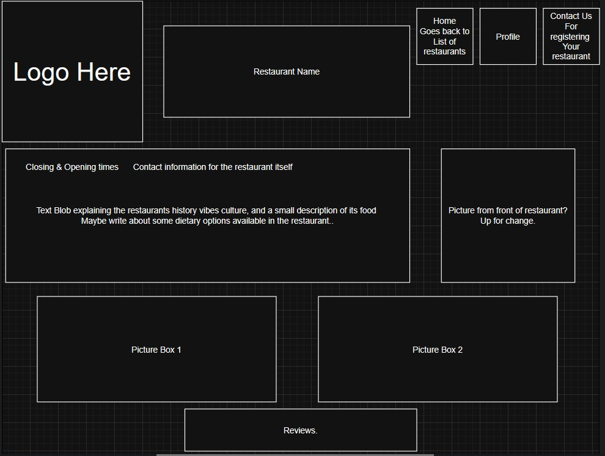
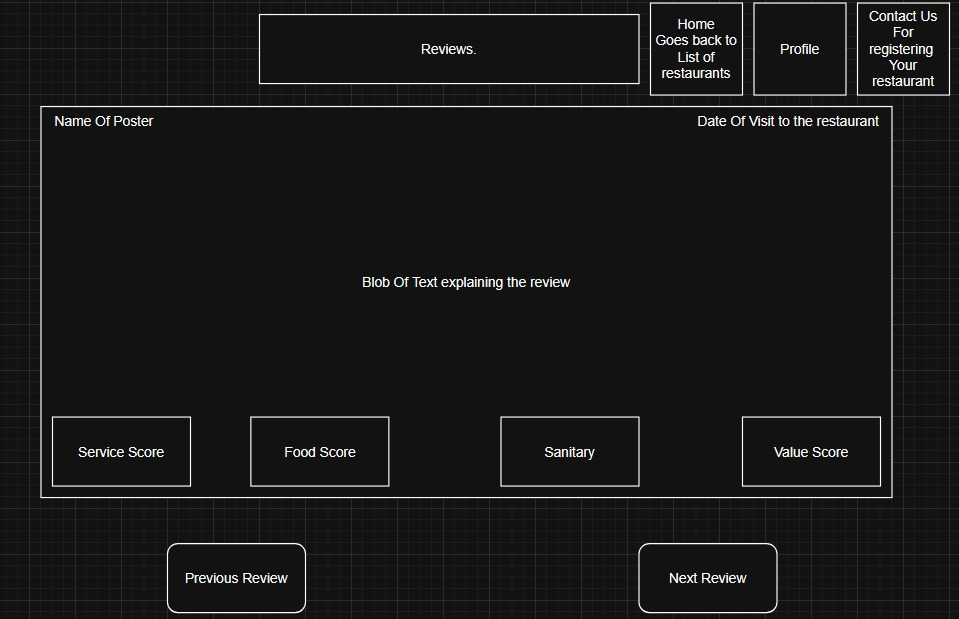

This site is for the review of our proposed templates for our projects pages. The templates for these pages are under review and are subject to change at any time and we will be updating them as soon as possible to reflect said changes.
The illustration below is the home page of the website. The layout was intentionally placed whereby the review and description will sit side by side with the image.
The opening times of the restrurant and a png image of a map will be displayed so that the user can view the location. Even this part is stactic the user will be able to press on the image of the name of the resturant and it woould take the user to the profile page.
In addition an ipframe will be used in the footer, where am advert can be displayed.
A design requirement that wasnt included in the pictorial design but but will be designed sis a ign-in interactive button which will take the user to a signing in form page.
The contact page will have a basic form as illustrated below, where the user will be able to interact by inserting the required information. This action will take the user back to home page where they will be able to post reviews

The picture below is the pictures for the registration and the login pages. These pages of the site wouuld have both get and post requests due to being anchor pages. Unless we add a visitor functionality where users can skip the post part and just view the site without signing up or logging in.
 

The image below is the template for the restaurant page which is one of the main parts of our project. This page wouldn't have much input functionality from the client side so it is primarily get only unless we change the plan and add a feature where users can review the restaurant directly on the restaurants page instead of getting redirected to the review page.
The image below is the template for the reviews page which is another one of the main parts of our project which will carry a lot of functionality. If we do all of our planned features this page will have both get and post requests which will consist of multiple forms of Liking and disliking reviews , posting reviews, and replying to reviews (BIG optional).
The image below is the optional page for profiles and this may be cancelled depending on how much we can get done. This page will also have a lot of get and post requests while also probably being the most complex page of the site due to the amount of small features we want to cram in it.